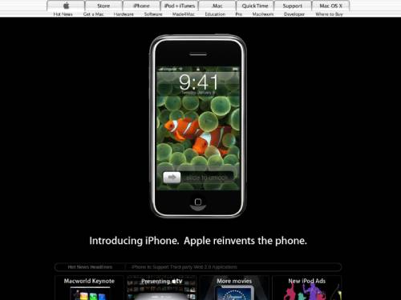
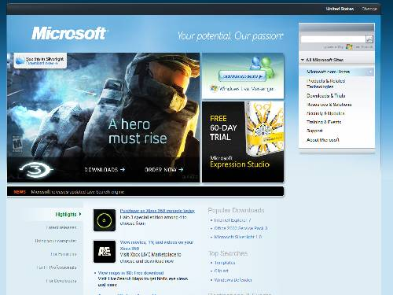

Here is the directory for technology websites, such as Microsoft, Google, and Apple.
Apple

Website a day after the iPhone's launch. (2007)
Apple had already purchased NeXT. And after Steve Jobs' return, he had begun work on the iMac. This year Apple
also lost $1 billion in revenue.
The launch of the online store along with the iMac, iBook, and PowerMac G3 were going well. NeXT continued to be
intergreated with the new MacOS 9.
The website got a glass redesign for the new millenium. A developer preview for the upcoming Mac OS X was
released. Alongside this was the launch of the iTools suite.
The new so-called sunflower iMac, second generation iPod, and eMac were released.
Mac OS X Jaguar was also released.
The iPod Shuffle was introduced alongside the iPad Nano. This was also near the time where Macs were switching
to Intel-based processors.
The first ever iPhone was introduced. It was given a full black preview on the website, below it was the first
generation Apple TV.
The iPhone 3GS was launched with iPhone OS 3. On the Mac side of things, a new line-up of Macbooks launches
alongside Logic Pro.
The first generation iPad mini was launched. At the bottom of this one's home page has the iPhone 5, an iMac,
and an iPad.
Microsoft

A 2007 snapshot.
One of first snapshots of microsoft.com, it was during a an antitrust lawsuit, and Microsoft Office 2000's
preview program.
During Windows XP early days, it promotes Office XP and the early .NET platform.
The website was in a bland 'phase' and was a simple information hub for Microsoft products.
More colorful content, Office 2007 and Visual Studio 2005 are shown.
Glossy redesign during Windows 7's launching year. Windows Live Messenger, Silverlight, and Internet Explorer 7
are seen.